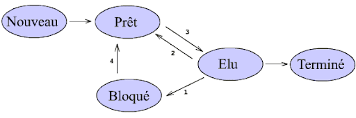
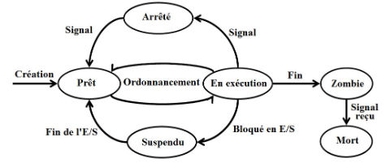
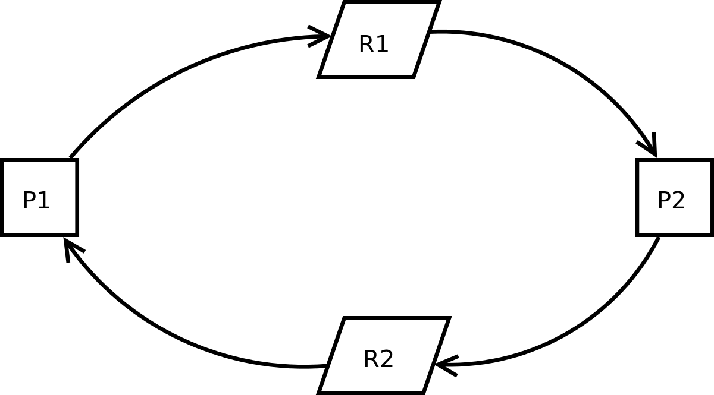
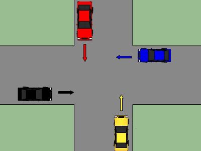

systeme d'exploitation
Systeme d’exploitation
En informatique, un système d’exploitation (souvent appelé OS — de l’anglais Operating System) est un ensemble de programmes qui dirige l’utilisation des ressources d’un ordinateur par des logiciels applicatifs. Lien Wikipedia
Il reçoit des demandes d’utilisation des ressources de l’ordinateur — ressources de stockage des mémoires (par exemple des accès à la mémoire vive, aux disques durs), ressources de calcul du processeur central, ressources de communication vers des périphériques (pour parfois demander des ressources de calcul au GPU par exemple ou tout autre carte d’extension) ou via le réseau — de la part des logiciels applicatifs. Le système d’exploitation gère les demandes ainsi que les ressources nécessaires évitant les interférences entre les logiciels.
Processus et blocages
Définitions
Exécution d’un programme: le lancement d’un programme entraîne des lectures et écritures dans des registres et une partie de la mémoire. Le microprocesseur réalise des opérations sur les données mises dans les registres.
Un processus représente une instance d’exécution d’un programme dans une machine donnée, qui a sa propre zone mémoire virtuelle.
Les états d’un processus
Les systèmes d’exploitation sont capables de gérer l’execution de plusieurs processus en même temps. En réalité, ce n’est pas tout à fait en même temps: pour gérer ce chacun son tour, les systèmes d’exploitation attribuent des états au processus.
Ces états sont résumés ci-dessous.
- Lorsqu’un processus est créé, il démarre dans l’état prêt: il attend l’accès au processeur.
- Le processus obtient, grâce au systeme d’exploitation, l’accès au processeur. Il passe alors dans l’état élu.
- Alors qu’il est élu, le processus peut avoir besoin d’attendre une ressource quelconque comme, par exemple, une ressource en mémoire ou sur le disque dur. Il doit alors quitter momentanément le processeur pour que celui-ci puisse être utilisé à d’autres tâches (le processeur ne doit pas attendre!). Le processus passe donc de l’état élu à l’état bloqué. (c’est un blocage)
- Lorsque le processus a obtenu la ressource attendue mais s’est fait prendre sa place dans le processeur par un autre processus, il se met en attente: C’est l’état prêt, en attente que la place se libère. Cette étape, de bloqué à prêt est l’opération de déblocage.
- Le passage de l’état prêt vers l’état élu constitue l’opération d’élection.
- Un processus ne pourra terminer que s’il est déjà dans l’état élu.

mecanisme d'election
Chaque processus possède un numéro PID qui lui est attribué automatiquement. Il possède aussi un PPID qui est le numéro d’identification du processus père.
Ordonnancement
Plusieurs processus peuvent être dans l’état prêt: comment choisir celui qui sera élu?
L’ordonnanceur (sheduler) classe les processus prêts dans une file et les fait passer du statut prêt à élu (et inversement). Il planifie l’exécution des processus.
Dans les systèmes d’exploitation, l’ordonnanceur désigne le composant du noyau du système d’exploitation choisissant l’ordre d’exécution des processus sur les processeurs d’un ordinateur. Cette organisation permet d’occuper au mieux le (ou les) processeurs.

gestion des processus
Il existe plusieurs politiques d’ordonnancement dont le choix va dépendre des objectifs du système. Voici quelques exemples:
• Premier arrivé, premier servi: simple, mais peu adapté à la plupart des situations.
• Plus court d’abord: très efficace, mais il est la plupart du temps impossible de connaître à l’avance le temps d’exécution d’un processus.
• Priorité: le système alloue un niveau de priorité aux processus (SCHED_FIFO sur Linux). Cependant des processus de faible priorité peuvent ne jamais être élus.
• Tourniquet: un quantum de temps est alloué à chaque processus (SCHED_RR sous Linux). Si le processus n’est pas terminé au bout de ce temps, il est mis en bout de file en état prêt.
• Un système hybride entre tourniquet et priorité qu’on retrouve dans les systèmes Unix.
Interblocage
Concurents mal synchronisés
L’ordonnanceur fait passer les processus de élu à commuté. Mais Il peut y avoir une situation où 2 processus sont interbloqués car:
- P1 possède la ressource R1 mais souhaite R2: commutation pour P2
- P2 possède la ressource R2 mais souhaite R1: commutation pour P1
Dans cette situation, les deux processus légers sont définitivement bloqués.(wiki)
Des solutions de détection/guérison peuvent être mises en place.
Définition sur Wikipedia
Deux processus en concurrence pour deux ressources dans un ordre opposé. Voici une chronologie possible qui mène à un interblocage.
A) Un seul processus se déroule.
B) Le processus ultérieur doit attendre.
C) Un blocage se produit lorsque le premier processus verrouille la première ressource en même temps que le second processus verrouille la seconde ressource.
D) Le blocage peut être résolu en annulant et en redémarrant le premier processus.
Modélisation par un graphe orienté
Il y a interblocage lorsque des cycles sont présents dans le graphe réalisé de la manière suivante:
- un arc de la ressource Ri au processus Pj signifie que le processus Pj a obtenu la ressource
- un arc Pj vers Ri signifie que le processus Pj demande la ressource Ri.

interblocage - wikipedia
Exemple: le processus P1 utilise la ressource R2 qui est attendue par le processus P2 qui utilise la ressource R1, attendue par P1.
Illustration d’un interblocage routier

saurez vous modéliser la situation suivante par un graphe présentant un cycle?
Gestion des tâches par une même application
Un thread est un élément d’un processus qui va partager avec un programme l’espace des données et va s’exécuter de façon simultané avec d’autres thread. On parle aussi de processus légers.
Plusieurs threads peuvent exister dans le même processus. Ces threads partagent la mémoire et l’état du processus. En d’autres termes: ils partagent le code ou les instructions et les valeurs de ses variables.

partage des ressources par 3 threads
Ils peuvent aussi causer de multiples problèmes (accès concurent, interblocage).
On a vu un problème identique sur la gestion concurente des accès à une même ressource sur le chapitre sur les SGBD.
TP Terminal Linux et gestion des processus
TP 1: les bases du terminal Linux
Voir l’énoncé du TP à l’adresse suivante: TP NSI
- explorateur en ligne de commande
- utilisateurs, groupes, droits
TP 2: processus
Pour ce TP, utiliser le terminal Linux du TP 1.
- Créer un nouveau fichier
test.sh
- Editer le fichier à l’aide de l’editeur nano
- CTRL X puis Y puis valider le nom du fichier pour sortir
- Executer le fichier
Il faudra peut-être modifier les droits en execution pour ce fichier:
- Vérifier que vous avez les droits en execution sur le fichier:
Vous devriez avoir x pour les droits d’execution sur ce fichier en tant que user. Sinon, saisir la commande suivante:
… et contrôlez que vous avez ajouté x à user (et même r). Puis executer le fichier.
- Modifier le fichier et créer une boucle infinie
Modifier le script test.sh avec les commandes suivantes:
et executer le script en mode détaché:
- vérifier alors les processus actifs avec la commande
top
- Relever les valeurs du PID et du PPID du programme qui boucle en tâche de fond:
test.sh - Sortir de
top:q
- Tuer le programme
- Vérifier que le processus est bien Dead…
Liens
- ce cours est inspiré de David Roche, sit Pixees term NSI partagé sous licence CC0
- Processeur, programmes, processus: très bon cours de levasseur.xyz
- cours NSI qkzk : systeme de fichiers
- multiprocessing
- (multi)threading
- multiprocessing or multithreading
- Guide complet sur la propriété et les groupes de fichiers Linux: linux-console.net
- Bref historique (fiche) de l’evolution des ordinateur et des systemes d’exploitation: courstechinfo.be